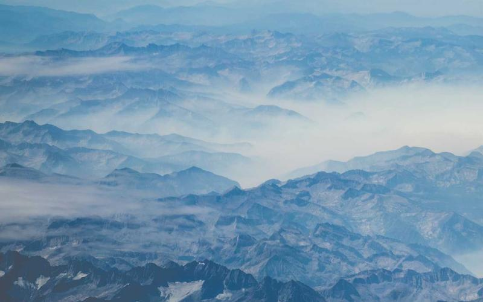
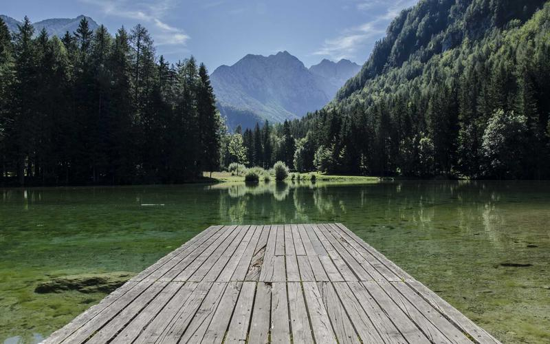
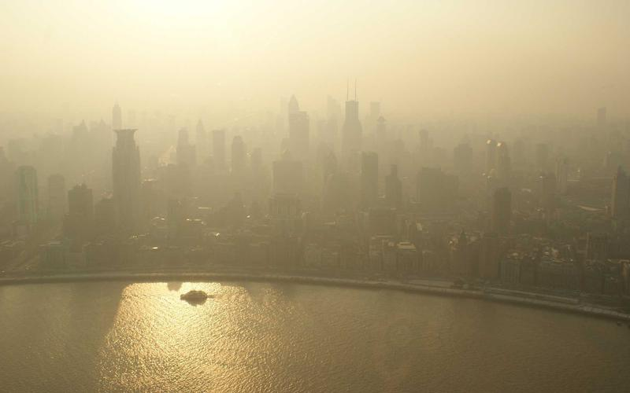
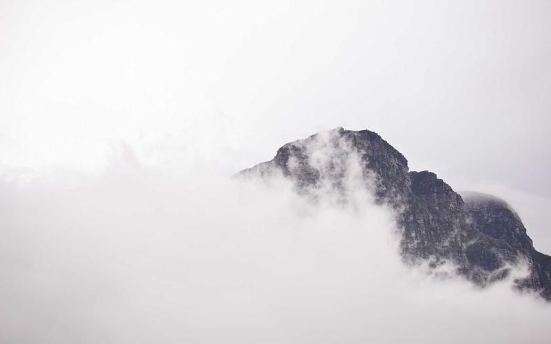

TravelBlog
Blog de viajes con diseño responsivo y galería fotográfica
Blog de viajes con diseño responsivo y galería fotográfica

TravelBlog surgió como proyecto personal para practicar diseño editorial aplicado a la web. La premisa era crear un blog de viajes donde la fotografía fuera el elemento central, sin sacrificar la calidad de la lectura. El reto estaba en equilibrar grandes imágenes con texto bien maquetado y una navegación que no resultara intrusiva.
El proceso de diseño arrancó definiendo los tipos de contenido que tendría el blog: entradas largas tipo crónica, galerías de destino, rutas con etapas y una sección de consejos prácticos. Con esa base se diseñó una plantilla para cada tipo, reutilizando componentes comunes como la cabecera de artículo, las tarjetas de destino y el pie de entrada.
La tipografía es uno de los puntos fuertes del proyecto: se combinaron dos fuentes web para crear contraste entre títulos expresivos y cuerpo de texto de alta legibilidad, con un tamaño de línea y espaciado calculados para artículos largos.
Año: 2024 | Rol: Diseño y maquetación | Duración: 4 semanas


article, section, aside y figure para un marcado limpio y accesible.grid-template-areas para definir los layouts complejos.El principal reto técnico fue la cuadrícula de la galería: quería que algunas tarjetas ocupasen más espacio que otras para crear un efecto de mosaico, pero sin JavaScript para calcular posiciones dinámicamente. La solución fue usar grid-template-rows: masonry junto con grid-auto-flow: dense, aunque al no tener soporte universal se preparó también un fallback con columnas de igual tamaño.
Otro punto complicado fue lograr que la imagen de cabecera de los artículos ocupase todo el ancho de la pantalla mientras el resto del texto permanecía en la columna de lectura. Se resolvió con un truco de márgenes negativos calculados con calc() y vw, sin romper el flujo del documento.
